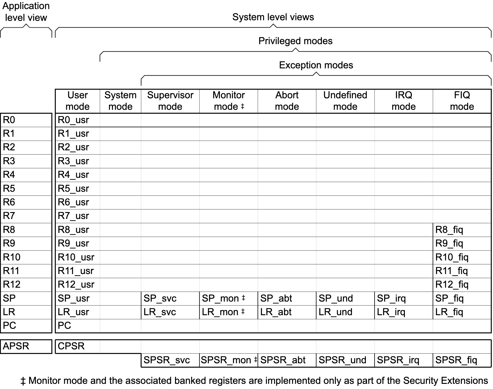
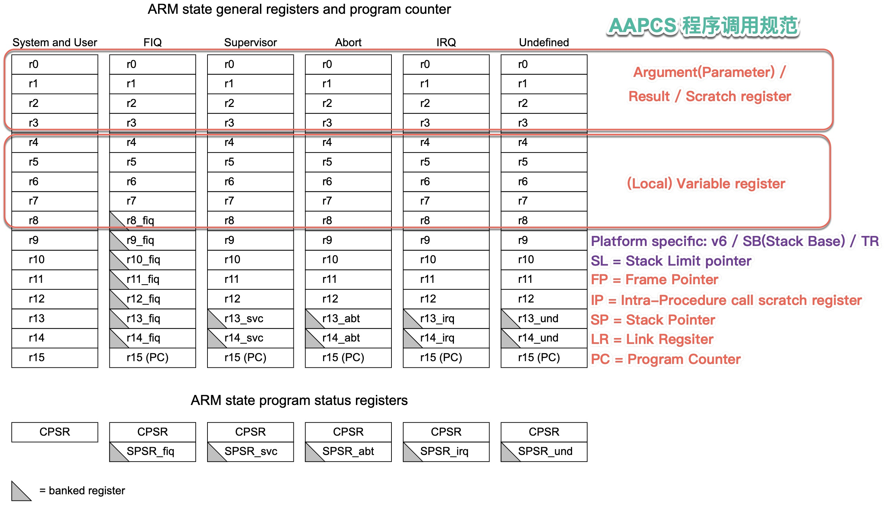
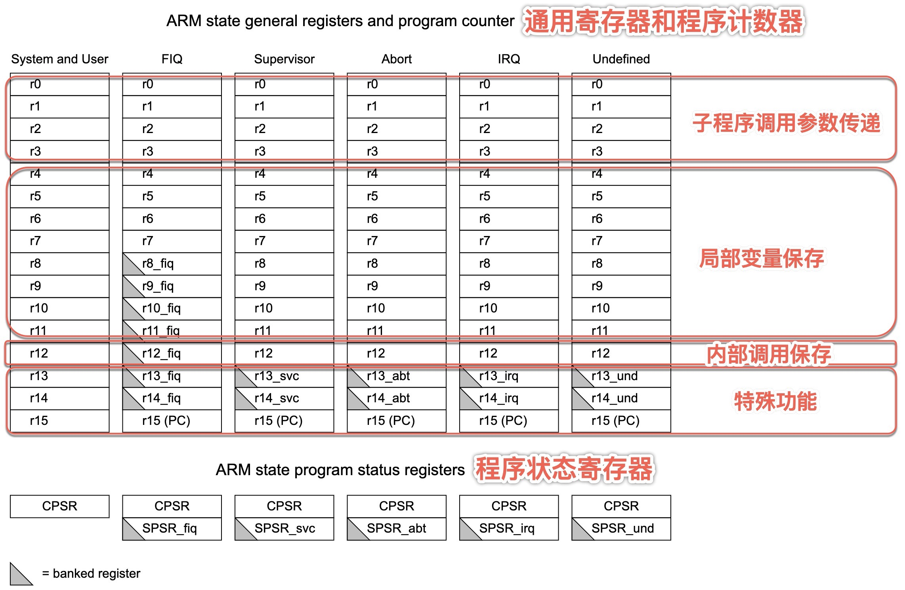
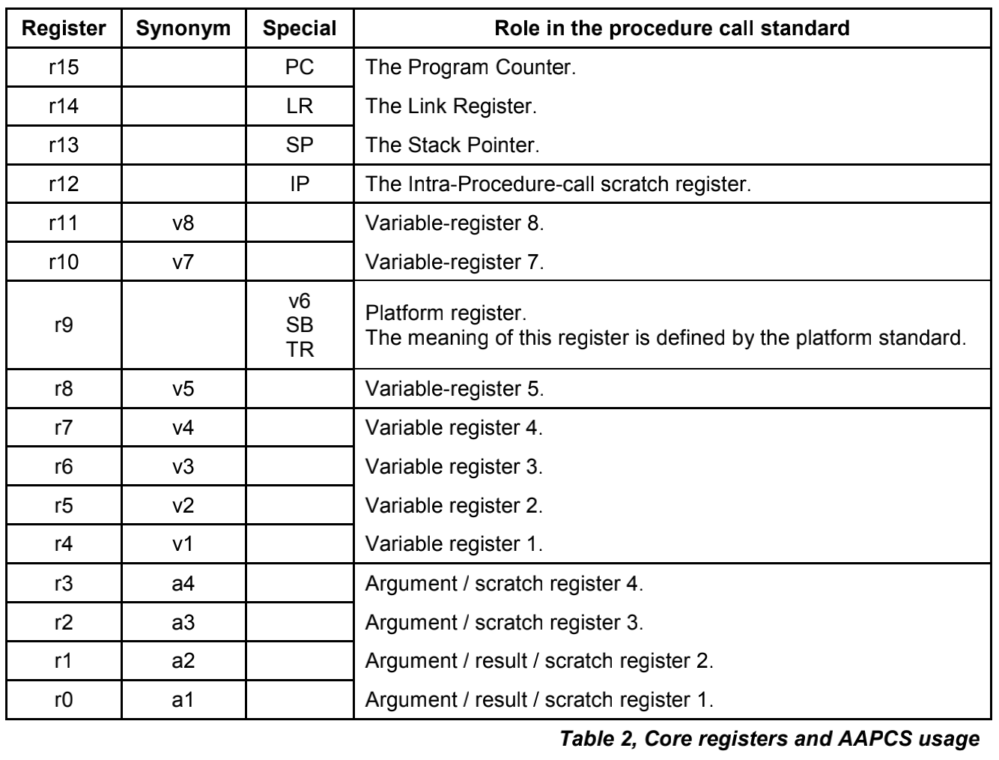
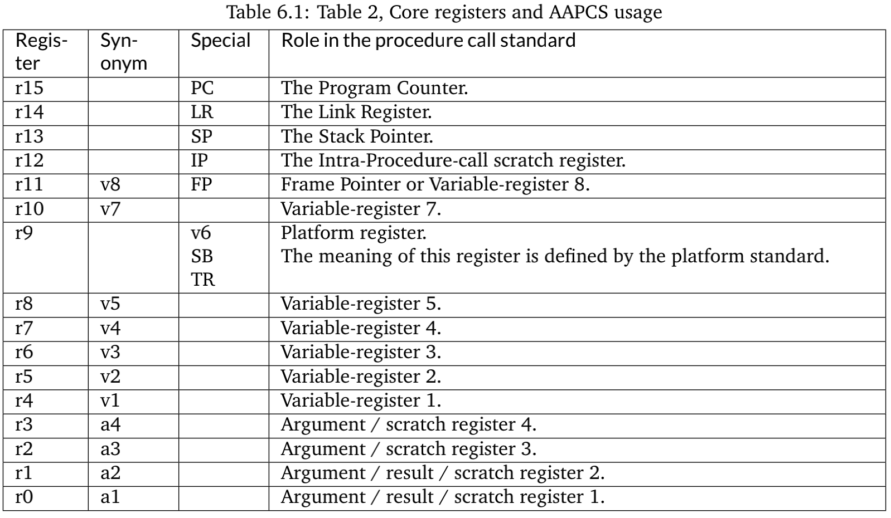
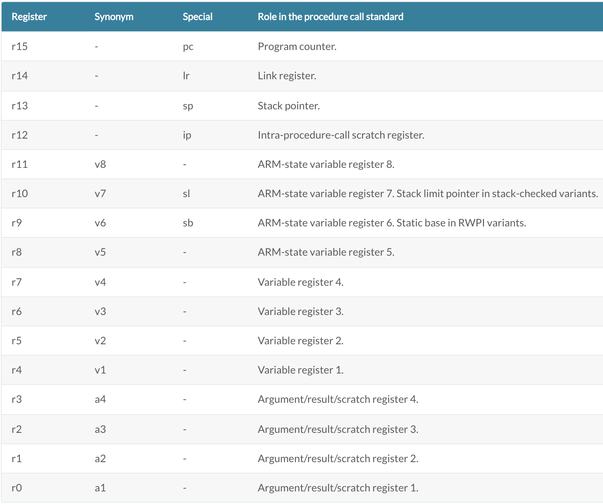

调用规范
- 【已解决】ARM的ARM64汇编语法和寄存器、调用规范等基础知识
- 【已解决】ARM64中寄存器用法规范
- 【整理】ARM程序调用规范AAPCS：举例解释
- 【已解决】IDA中xsp和xbp是什么意思如何定位地址
背景知识
- ARM模式和寄存器
- ARM处理器有7种（运行）模式
- usr = User = 用户模式
- fiq = Fast interrupt = 快速中断模式
- irq= Interrupt = 普通中断模式
- svc = Supervisor = 管理模式
- abt = Abort = 数据访问中止模式
- usr = System = 系统模式
- User用户模式和System系统模式共用一套寄存器
- und = Undefined = 未定义指令中止模式
- 概述
- Organization of general-purpose registers and Program Status Registers

- Organization of general-purpose registers and Program Status Registers
- ARM处理器有7种（运行）模式
AAPCS(Procedure Call Standard for the Arm Architecture) 程序调用规范 = ARM寄存器用法 用途
AAPCS=Procedure Call Standard for the Arm Architecture=程序调用规范- 含义：描述了ARM寄存器用途和用法
- 图=概述
- ARM状态的寄存器组织结构 + 寄存器用法


- 核心寄存器和AAPCS用法

- r9：平台寄存器: v6 / SB /TR
- r11 = SP
- r12 = IP


- 从不同版本可以看出
- 一般来说，函数返回值只用r0-r1
- 偶尔也可以用r2-r3
- 一般来说，函数返回值只用r0-r1
- ARM状态的寄存器组织结构 + 寄存器用法
- 文字
- ARM Developer Suite Developer Guide 的 ATPCS
- r0-r3
- Use registers r0-r3 to pass parameter values into routines, and to pass result values out. You can refer to r0-r3 as a1-a4 to make this usage apparent. See Parameter passing. Between subroutine calls you can use r0-r3 for any purpose. A called routine does not have to restore r0-r3 before returning. A calling routine must preserve the contents of r0-r3 if it needs them again.
- r4-r11
- Use registers r4-r11 to hold the values of a routine's local variables. You can refer to them as v1-v8 to make this usage apparent. In Thumb state, in most instructions you can only use registers r4-r7 for local variables. A called routine must restore the values of these registers before returning, if it has used them.
- r12
- Register r12 is the intra-call scratch register, ip. It is used in this role in procedure linkage veneers, for example interworking veneers. Between procedure calls you can use it for any purpose. A called routine does not need to restore r12 before returning.
- r13
- Register r13 is the stack pointer, sp. You must not use it for any other purpose. The value held in sp on exit from a called routine must be the same as it was on entry.
- r14
- Register r14 is the link register, lr. If you save the return address, you can use r14 for other purposes between calls.
- r15
- Register r15 is the program counter, pc. It cannot be used for any other purpose.
- r0-r3
- Procedure Call Standard for the Arm Architecture - ABI 2020Q2 documentation
- r0-r3
- The first four registers r0-r3 (a1-a4) are used to pass argument values into a subroutine and to return a result value from a function. They may also be used to hold intermediate values within a routine (but, in general, only between subroutine calls).
- r12
- Register r12 (IP) may be used by a linker as a scratch register between a routine and any subroutine it calls (for details, see Use of IP by the linker). It can also be used within a routine to hold intermediate values between subroutine calls.
- r11
- In some variants r11 (FP) may be used as a frame pointer in order to chain frame activation records into a linked list.
- r9
- The role of register r9 is platform specific. A virtual platform may assign any role to this register and must document this usage. For example, it may designate it as the static base (SB) in a position-independent data model, or it may designate it as the thread register (TR) in an environment with thread-local storage. The usage of this register may require that the value held is persistent across all calls. A virtual platform that has no need for such a special register may designate r9 as an additional callee-saved variable register, v6.
- r4-r8, r10, r11
- Typically, the registers r4-r8, r10 and r11 (v1-v5, v7 and v8) are used to hold the values of a routine's local variables. Of these, only v1-v4 can be used uniformly by the whole Thumb instruction set, but the AAPCS does not require that Thumb code only use those registers.
- A subroutine must preserve the contents of the registers r4-r8, r10, r11 and SP (and r9 in PCS variants that designate r9 as v6).
- r12-r15
- In all variants of the procedure call standard, registers r12-r15 have special roles. In these roles they are labeled IP, SP, LR and PC.
- r0-r3
- ARM Developer Suite Developer Guide 的 ATPCS
- 相关资料
- github.com
- ARM-software/abi-aa: Application Binary Interface for the Arm® Architecture (github.com)
- aapcs32
- aapcs64
- Releases · ARM-software/abi-aa (github.com)
- ARM64
- ABI for the Arm 64-bit Architecture
- Procedure Call Standard for the Arm 64-bit Architecture
- ABI for the Arm 64-bit Architecture
- ARM64
- ARM-software/abi-aa: Application Binary Interface for the Arm® Architecture (github.com)
- arm.com
- github.com